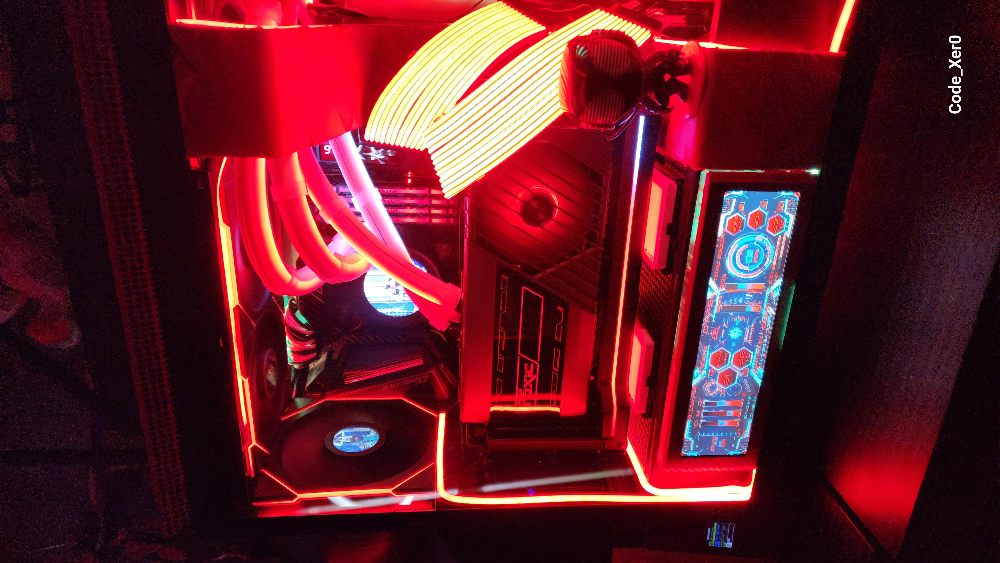

Creator
Workstations for local AI, video, audio, CAD, and heavy multitask workflows.
The Forge is the conversion path for hardware work: budget, use case, aesthetic direction, repair/mod services, benchmark vault, and appointment intake can evolve here without crowding the front door.

Workstations for local AI, video, audio, CAD, and heavy multitask workflows.
Performance-first builds tuned for thermals, acoustics, display targets, and presence.
Diagnostics, upgrades, cable cleanup, case transfers, and aesthetic rebuilds.